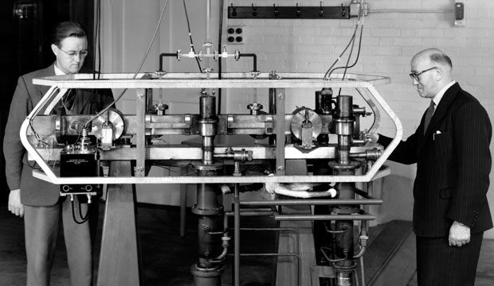
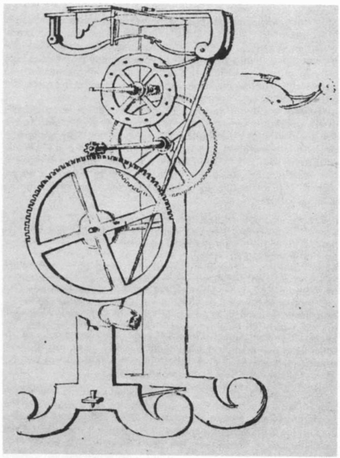
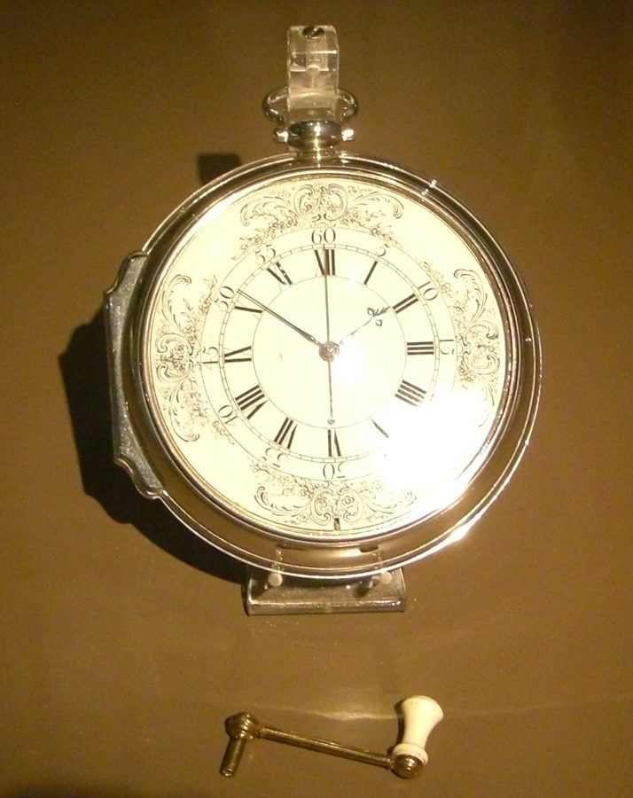
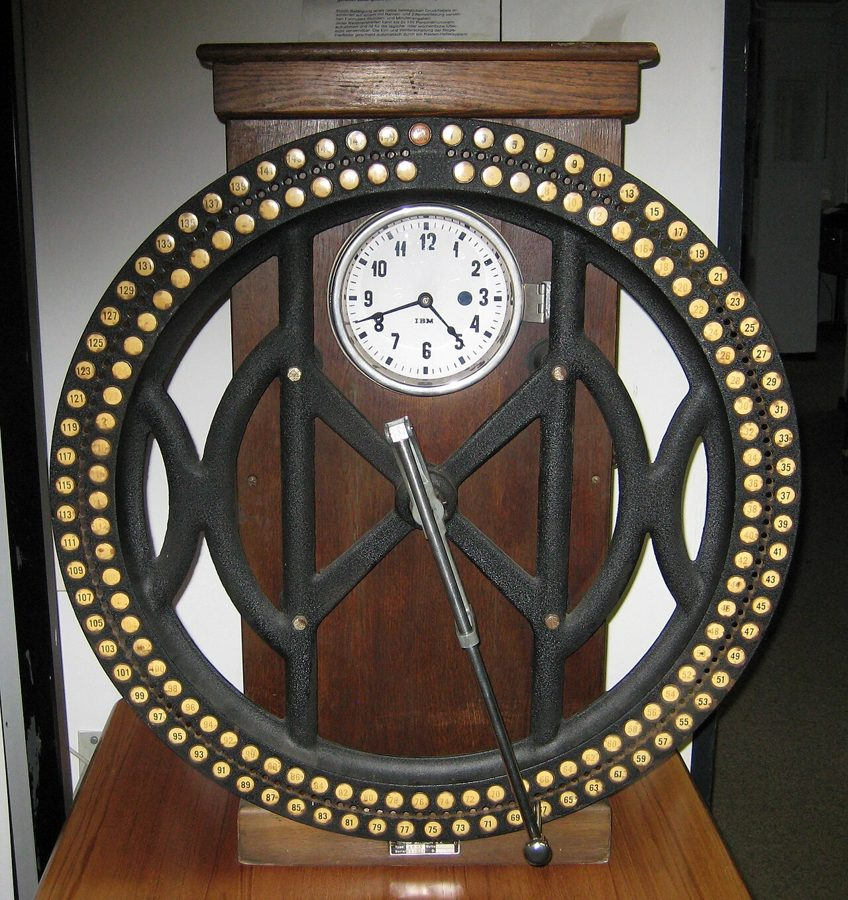
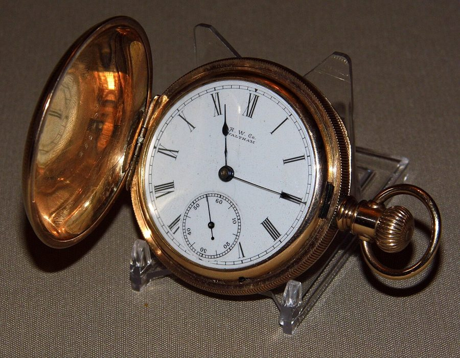
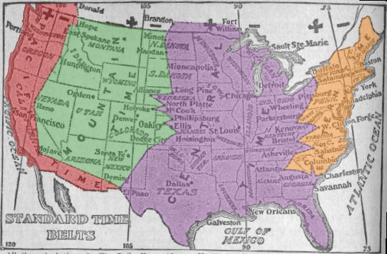
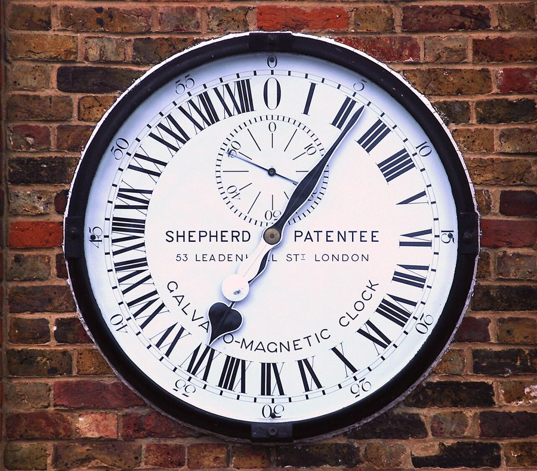
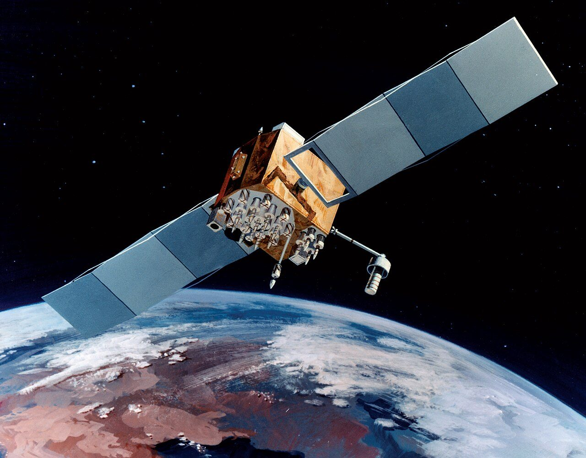
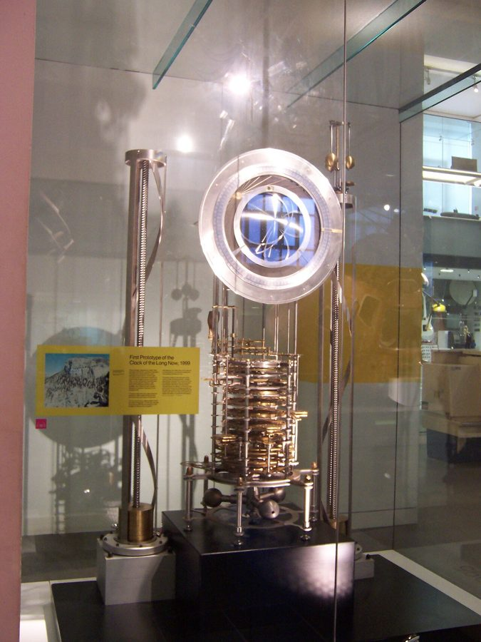

这一章在做什么
这一章从比萨大教堂里一盏晃动的吊灯出发。主线是一场接力：每找到一种节拍更稳的东西（摆、石英、铯原子），钟就准上几个数量级，然后在别处引出没人料到的变化：工厂的打卡和时薪、邮购目录、时区、计算机、手机定位。最后两节掉头去量极慢的时间：碳定年和万年钟。
读的时候抓住两个反复出现的词：equal time （等时，稳定的节拍）和 time discipline （时间纪律）。
比萨大教堂中殿的青铜吊灯，俗称「伽利略的灯」。这一章的因果链从一盏吊灯的摆动讲起。现在挂着的这盏是 1587 年前后才装上去的，比故事里的 1583 年晚。
Tangopaso，公有领域，维基共享资源
因果链：这一章的蜂鸟效应
这一章的链条分两段。前一段是摆钟（§2–§4），后一段是石英和原子（§5–§8）。两段的起点是同一类东西：一种自己会打稳定节拍的自然现象。
摆这条线（§2–§4）
右上三行：工业革命起飞的三个条件
摆的等时性 §2
远洋航海要测经度 §2
摆钟 §2
海上定出经度 §3
全球航运网 §3
精密钟表工艺 §3
工业工程 §3
时间纪律、时薪 §3
浪漫派的反抗 §3
可互换零件 §3
廉价怀表 §3
邮购目录 §3
铁路和电报 §4
各地各走各的时间 §4
标准时间、时区 §4
对表不再看太阳 §4
两条线汇到一个框：两样东西凑到一起，才有后面那件事。
本站示意图。前半章的链条。摆钟往右分出三支，都通向工业革命；往下那一支从怀表走到两个看似不相干的地方。
越量越细（§5–§6）
石英的压电振荡 §5
石英钟 §5
计算机的主时钟 §5
GPS 定位 §6
量出地球自转不匀 §5
铯原子钟 §6
秒的新定义 §1 §6
越量越长（§7–§8）
原子的科学 §6 §7
放射性衰变 §7
放射性定年 §7
史前史、地球年龄 §7
万年钟 §8
虚线：这一环不是因果，是同一个道理的延伸。
换一种量时间的办法，人就换一种想事情的尺度。
两支的起点是同一类东西：一种节拍稳定的自然现象（作者叫它 equal time）。
本站示意图。后半章的链条。上面一支把时间越切越细，下面一支把时间越拉越长。 最出人意料的一跳，作者自己在 §5 点了出来：石英钟变成便宜的石英表，谁都猜得到；猜不到的是它成了计算机的心跳。§3 里从怀表到邮购目录是另一跳。
还有一条贯穿全章的暗线：每次钟变准，人对地理的掌握就跟着进一步，从航海、铁路一直到手机定位。
分节地图
原书这一章分 8 节，节与节之间是一条短横线，每节开头几个词是小型大写字母。读完一节回来打个勾。
In October 1967, a group …约 400 词 开场先给终点：一次会议改了秒的定义。带着「为什么要改」往下读。 MEASURED PURELY BY TOURIST ATTENTION …约 1200 词 链条第一环：等时性怎样遇上航海的需求。抓住「需求来自地图」。 WHEN WE THINK ABOUT the technology …约 1400 词 全章重心：钟为什么是工业革命的条件，又怎样改了人对时间的感觉。 WHEN DENNISON FIRST STARTED thinking …约 1000 词 表普及后冒出的新问题：准了，却不统一。看铁路和电报起什么作用。 ONE OF THE STRANGE PROPERTIES …约 800 词 接力第二棒石英。意外的一跳在计算机；结尾反过来挑出地球的毛病。 KEEPING PROPER TIME IS ULTIMATELY …约 900 词 第三棒原子钟，接回开头的会议，再落到手机定位。留意和 §2 的呼应。 AT FIRST GLANCE, THE STORY …约 500 词 方向掉头：同样靠「等时」，这回量的是千年和亿年。 HIGH IN THE SOUTHERN SNAKE MOUNTAINS …约 600 词 收束：拿万年钟对照纳秒，摆出两种时间观。作者没有给答案。
背景：作者默认你知道的事
这一章有两个关键人物作者没提名字（造出摆钟的人、解决经度问题的人），还有几处说得不够准。按出现的顺序补上。先看几个英制数字：
书里的数字 换算 在哪 sixty-eight miles 约 109 公里（经度 1° 在赤道上的长度，现在通用的数字是约 111 公里） §2 8½ yards 约 7.8 米（1 码 = 0.914 米），织工一天织的布 §3 $40 / $3.50 1850 年代美国普通工人一天挣一美元上下：从一个多月的工钱降到三四天的工钱 §3 fifteen pounds 约 6.8 公斤 §3 a hundred thousand miles 约 16 万公里 §4 thirty feet 约 9 米 §8
§1 国际计量大会
世界上第一台铯原子钟和它的两位制造者埃森（Louis Essen）、帕里（J. V. L. Parry），英国国家物理实验室，1955 年。十二年后的新定义靠的就是这种钟，§6 会讲到。
National Physical Laboratory，公有领域，维基共享资源 General Conference on Weights and Measures，法文缩写 CGPM。1875 年《米制公约》设立的机构，总部在巴黎近郊，各成员国代表每隔几年开一次会，决定米、千克、秒这些单位怎么定义。1967 年那次是第 13 届。
书里 §1 叫它 General Conference，§6 写成 International Conference，是同一个会。
§2 吊灯的传说，和摆钟到底是谁造的
伽利略 1641 年前后设计的摆钟，维维亚尼 1659 年画的图。为了露出齿轮，画的人去掉了一部分前夹板。
Vincenzo Viviani，公有领域，维基共享资源 吊灯的故事出自伽利略的学生维维亚尼（Vincenzo Viviani）在老师死后写的传记，作者用 legend has it 留了余地。Nicene Creed 是《尼西亚信经》，弥撒中全体齐声念的信仰宣言。
书里从伽利略父子画图纸，直接跳到「下个世纪摆钟随处可见」，中间缺一步：伽利略 1642 年去世，钟没有造成；第一台能用的摆钟是荷兰人惠更斯 1656 年做出来的。
伽利略 Galileo Galilei 1564–1642。这一章里他是发现等时性、画出摆钟图纸的人。
惠更斯 Christiaan Huygens 1629–1695，荷兰物理学家。造出第一台实用摆钟。书里没有提他。
巴利亚尼 Giovanni Battista Baliani 热那亚的科学家，伽利略的通信对象。书里那句话出自写给他的信。
§2 经度奖和航海钟
哈里森的 H4，格林尼治国家海事博物馆藏。直径十几厘米，样子是一只大怀表。
Colonel Warden at en.wikipedia，CC BY-SA 3.0，维基共享资源 1714 年英国议会悬赏最高两万英镑，征求在海上测定经度的办法。最后做到的是木匠出身的钟表匠约翰·哈里森（John Harrison）。他的 H4（1759 年完成）用的是发条和摆轮，不是摆：摆在颠簸的船上没法用。
书里没提他，§3 说的「准确的钟能定经度」和 §8 的 chronometer （航海钟）指的就是这一类钟。
§3 时间纪律：这一节引的四个人
老式转盘考勤钟，1900 年前后，德国 IBM 数据处理历史馆藏。工人把长臂转到自己的编号上按下去，机器记下此刻的时间。
JuergenG，CC BY-SA 3.0，维基共享资源 time discipline 是汤普森的术语。Romantic 首字母大写，指 1800 年前后的浪漫主义文人，不是「浪漫的人」。
E. P. 汤普森 E. P. Thompson 英国史学家。1967 年的论文《时间、工作纪律与工业资本主义》是这一节的骨架。
韦奇伍德 Josiah Wedgwood 18 世纪英国的陶瓷大王。他的工厂在斯塔福德郡，不在书里说的伯明翰。
狄更斯 Charles Dickens 《艰难时世》（Hard Times ，1854）写的是工业城镇，那只「统计钟」出自这部小说。
华兹华斯 William Wordsworth 英国浪漫派诗人。《序曲》（The Prelude ）是他的自传体长诗。
§3 可互换零件和沃尔瑟姆怀表
一只沃尔瑟姆怀表，表盘上印着 A. W. Co. Waltham。它不是书里那款 Wm. Ellery，是同一家厂的另一款。
Joe Haupt from USA，CC BY-SA 2.0，维基共享资源 interchangeable parts ：零件按统一规格造，随便拿一个都装得上。这套做法 19 世纪上半叶先在美国的兵工厂里成形。丹尼森 1850 年在波士顿附近办的厂，后来叫沃尔瑟姆钟表公司（Waltham）。
Civil War 指美国南北战争（1861–1865）。
§3 西尔斯的邮购目录
西尔斯 1922 年的「现代住宅」目录封面。起家时卖表，后来连成套的房屋材料都可以邮购。
Sears, Roebuck and Company，公有领域，维基共享资源
Sears, Roebuck 的目录是 19 世纪末到 20 世纪美国乡村的「纸上百货公司」：翻目录，寄订单，货由火车送到。厚厚一大本，所以书里拿「十五磅的目录压着你的信箱」开玩笑。西尔斯的大目录 1993 年停刊。
§4 标准时间是铁路自己定的

1913 年的美国时区图（后人上色）。分界线是折线，跟着铁路枢纽走。
OwenBlacker，公有领域，维基共享资源 
格林尼治天文台大门旁的电钟，24 小时制表盘。
Alvesgaspar，CC BY-SA 3.0，维基共享资源
1883 年 11 月 18 日那次改时是铁路公司的行业约定，不是法律，美国国会到 1918 年才立法承认时区。1884 年在华盛顿开的国际子午线会议选定格林尼治为本初子午线；全球时区是此后几十年各国陆续采用的，书里说得快了些。
B&O 是巴尔的摩与俄亥俄铁路。
§5 石英到原子钟：几个人，三处不够准
GPS（Navstar）卫星的想象图。每颗卫星上都带着原子钟。
USAF，公有领域，维基共享资源 pre-Copernican 指哥白尼之前把地球当宇宙中心的看法。书里说玻尔研究铯原子时发现了它的规律，这不是通常的说法：用原子计时是美国物理学家拉比（Isidor Rabi）1945 年提出的，第一台铯钟 1955 年由英国的埃森（Louis Essen）造出。闰秒不是每年都加，补的是地球自转的快慢，不是公转轨道。GPS 卫星在约两万公里高的中轨道，不是低轨道。
居里兄弟 Pierre & Jacques Curie 1880 年发现压电效应。皮埃尔就是 §7 里居里夫人的丈夫。
马里森 W. A. Marrison 贝尔实验室（Bell Labs，美国电话公司 AT&T 的研究机构）的工程师，造出第一台石英钟。书里写 1928 年，常见的说法是 1927 年。
巴贝奇 Charles Babbage 19 世纪英国数学家。他设计的「分析机」没有造成，其中做运算的部分叫 mill。
玻尔、海森堡 Niels Bohr, Werner Heisenberg 量子力学的两位奠基人。
§7 碳定年能测什么，不能测什么
碳 14 还剩多少：每过 5730 年少一半
100% 50% 25% 12.5% 6.25%
生物死去时 5730 年 11460 年 17190 年 22920 年
五万年后只剩千分之二左右，再往前就量不准了。
本站示意图。半衰期（half-life）：不管起初有多少，过这么久就剩一半。量出还剩几成，就能倒推过了多久。 碳定年由美国化学家利比（Willard Libby）在 1940 年代末做成。它只能测曾经活过的东西（骨头、木炭、布），上限五万年左右；测岩石和地球年龄，用的是铀、钾这些半衰期长得多的元素。书里把两者说成了一回事。
Bering Land Bridge 是冰期连接西伯利亚和阿拉斯加的陆桥。
§8 狐尾松、万年钟和基金会的几个人
内华达州大盆地国家公园（Great Basin National Park）步道旁的狐尾松。书里说的 Snake Mountains 就在这座公园里。
Famartin，CC BY-SA 4.0，维基共享资源

万年钟的第一台原型机，1999 年完成，伦敦科学博物馆藏。
Pkirlin at en.wikipedia，CC BY-SA 3.0，维基共享资源 Long Now Foundation（今日永存基金会）1996 年成立于旧金山。得州那座钟建在亚马逊创始人贝索斯名下的山里，由他出资。狐尾松（bristlecone pine）的年龄主要是数年轮数出来的，它的年轮还被用来校准碳定年。
希利斯 Danny Hillis 并行计算机公司 Thinking Machines 的创办人，万年钟的设计者。
伊诺 Brian Eno 英国音乐人、唱片制作人，「氛围音乐」的开创者。Long Now 这个说法是他起的。
布兰德 Stewart Brand 1968 年创办《全球概览》（Whole Earth Catalog ），硅谷反主流文化的代表人物。
凯利 Kevin Kelly 《连线》（Wired ）杂志的创始执行主编。
索尔克 Jonas Salk 美国医学家，1955 年做出脊髓灰质炎（小儿麻痹）疫苗。
这一章的科学，先用中文过一遍
单摆的等时性：周期只看绳长
一根绳吊一个重物，就是单摆（pendulum）。它来回一次的时间叫周期。摆幅大，要走的路长，但荡得也快，两头正好抵消，所以周期不随摆幅变；换一个更重的摆锤，周期也不变。能改周期的只有绳长：绳越长摆得越慢，一米长的摆来回一次大约两秒。
钟要的就是这样一个不受干扰的节拍源，剩下的事只是数拍子，像程序里的定时器中断加一个计数器。
严格说，等时性只在摆幅不大时成立，摆幅很大时周期会略微变长。
摆幅大 摆幅小 绳长减半
来回一次：T 来回一次：还是 T 来回一次：约 0.7 T
周期 T = 2π√(L/g)：式子里只有绳长 L 和重力加速度 g，没有摆幅，也没有重量。
本站示意图。伽利略在吊灯上看到的就是左边两个摆的关系。 经度就是时差
纬度（latitude）看天就知道：北极星离地平线多高，你就在北纬多少度。经度（longitude）不行，因为地球在自转，东西方向上天空处处一样，只是早晚不同。
地球 24 小时转一圈 360°，所以每小时 15°，每 4 分钟 1°。带一只始终走出发港时间的钟上船；在海上看太阳升到最高点，那是当地正午；这时看一眼那只钟，差几个小时，就离出发港多少个 15°。
难处全在那只钟：它每错 4 分钟，船位就错 1°。
地球 24 小时转 360°：每小时 15°，每 4 分钟 1°
船上看到太阳最高：当地正午
太阳走到各条经线正上方时，出发港那只钟的读数：
12:00 13:00 14:00 15:00 16:00 17:00
0° 西 15° 西 30° 西 45° 西 60° 西 75°
出发港 船
出发港的钟 14:00 − 船上正午 12:00 = 2 小时 → 船在西经 30°
赤道上 1° 约 111 公里。钟一天错 20 分钟，船位一天就偏 5°，约 550 公里。
本站示意图。两只钟定经度。船上那只钟每天可以靠太阳重新对准，麻烦的是从出发港带来的那只。 石英振荡器，和给它校音的铯原子
压电效应（piezoelectricity）是双向的：挤压石英晶体，它两面会出现电压；反过来给它加电压，它会微微变形。把一小片石英接进电路，电路推它一下，它弹回来又产生电压，电压再去推它，于是它按自己固有的频率一直振下去。这个频率由晶片的形状和大小决定，非常稳。
手表里的石英片通常切成每秒振 32768 次，也就是 2 的 15 次方：对半分频 15 次，正好每秒一个脉冲。电脑主板上的晶振是同一个道理，只是频率高得多，CPU 的每一步都踩着它的拍子。
书里说晶体「受压就会稳定振动」，是把这个过程压缩成了一句话。
原子钟没有扔掉石英，而是给它加了一个裁判。铯 133 原子只吸收频率恰好是 9,192,631,770 赫兹的微波。把石英的信号倍频成微波去照铯原子，频率一偏，被打动的原子就变少，电路据此把石英调回去。
像一台电脑用本地晶振走时，再隔一会儿向时间服务器对一次表。
石英钟：晶体定节拍，电路数拍子
石英晶片 加电压就变形
振荡电路 每秒 32768 次
分频器 ÷2，连做 15 次
每秒 1 个脉冲 推秒针或计数
原子钟：让铯原子给石英校音
石英振荡器 负责一下一下走
倍频成微波 约 9.19 GHz
铯原子 频率正好才翻转
检测器 数翻转了多少
翻转的原子变少 = 频率偏了 → 把石英调回去
所以 §6 说老的计时办法没有消失：原子钟里走时的还是石英。
本站示意图。「翻转」指铯原子在两个超精细能级之间跃迁，1967 年的秒就是用这个跃迁的频率定义的。 GPS：把时间差换成距离
每颗卫星不停地广播两样东西：现在几点，我在哪。信号以光速飞到手机，路上要花一点时间，所以手机收到时，里面写的时刻已经「旧」了一点。旧了多少，乘以光速，就是手机到这颗卫星的距离。知道到三颗卫星的距离，空间里就只剩一个点对得上。
光一纳秒只走 30 厘米，所以钟差百万分之一秒，位置就差 300 米，这就是卫星上非得带原子钟的原因。
书里说至少三颗；实际要四颗，多出的一颗用来算出手机自己那只便宜石英钟差了多少。
卫星 A 卫星 B 卫星 C
晚到 t₁ 晚到 t₂ 晚到 t₃
手机
到每颗卫星的距离 = 光速 × 晚到的时间
卫星的位置是已知的。三个距离同时满足的地方只有一个点。
本站示意图。§6 说「晚报时的卫星离得近」：信号在路上花的时间短，带来的时刻就更新。和 §2 的航海家一样，都是比较两只钟来定位置。
英文 中文 一句话 summer solstice 夏至 一年里白天最长的那天。巨石阵的石头对着这一天日出的方向。 pendulum 摆 吊着来回摆动的重物。pendulum clock 是摆钟。 dynamics 动力学 研究物体怎样运动、为什么这样运动的力学分支。 longitude / latitude 经度 / 纬度 经度量东西，纬度量南北。 prime meridian 本初子午线 经度 0° 那条线，穿过格林尼治。meridian 是经线。 marine chronometer 航海钟 在船上也能长期走准的精密钟，用来定经度。 interchangeable parts 可互换零件 同一型号的零件个个一样，可以随意替换，是大批量生产的前提。 piezoelectricity 压电效应 某些晶体受压生电、通电变形。打火机的点火器也靠它。 quartz 石英 结晶的二氧化硅，和第 1 章穆拉诺（Murano）玻璃的主要成分相同。§5 末尾的 vibrating sand 和 §6 的 silicon dioxide 都指它。 oscillate / oscillator 振荡 / 振荡器 有规律地来回变化；产生这种变化的东西。 overclocking 超频 把主时钟调得比设计值快，让芯片每秒多走几步。 cesium (caesium) 133 铯 133 一种金属元素的稳定同位素。caesium 是英式拼法，定义原文用的是它。 hyperfine levels 超精细能级 原子基态（ground state）里挨得极近的两个能量台阶。 half-life 半衰期 放射性原子衰变掉一半所需的时间。 radiometric dating 放射性定年 靠衰变剩下多少来推算年代的方法的总称，碳定年是其中一种。
词与短语
词条按在书里出现的顺序排，按节分组。斜体小字是它所在的那句话里的几个词，方便你在书里找到。
§1 In October 1967, a group …
questionable fortune
… had the questionable fortune to attend …
算不算幸运还两说的「幸运」
反话。have the good fortune to do 是「有幸」，把 good 换成 questionable（成问题的），意思是开这种会未必是好事。
affair
… sense of how these affairs go …
（这类）活动、场合
不是风流韵事，也不是「事务」。指一场聚会、一次活动：a formal affair 。
networking
… broken up by casual networking over …
攀谈结交，拓展人脉
和计算机网络无关。over coffee 是「边喝咖啡边」。
not a whole lot
… not a whole lot gets done …
没多少（事办成）
a whole lot 是口语里的「很多」。get done 是被做完。整句是轻描淡写的挖苦。
venerable
… broke from that venerable tradition …
历史悠久、受人敬重的
这里也是反话：那个「光荣传统」是开会不办事。break from 是打破、背离。
the very
… change the very definition of time …
（时间的定义）本身
very 放在名词前是形容词，强调「正是这个」，不是「非常」。
heavenly
… tracking the heavenly rhythms of solar …
天上的，天体的
不是「美妙的」。和下文的 celestial 同义。heavenly body 是天体。
revolve around
… sense of time revolved around the …
围着……转；以……为中心
双关：地球真的绕太阳转，人的时间观念也「以太阳为中心」。
stretch
… For most of that stretch …
一段（时间）
熟词生义。本义是拉伸，作名词指连续的一段时间或路程。这里指前一句说的整个人类历史。
grade-school
… was defined by grade-school division …
小学水平的
grade school 是美国人对小学的说法。意思是：定义时间只用到了小学除法。
metronome
… flaws in that celestial metronome …
节拍器
把日月星辰比作一只挂在天上的节拍器。§2 还会按本义再出现一次。
well
… to be, well, a bit wobbly …
怎么说呢
夹在句子中间的 well 是在找一个合适的词，后面往往跟一个故意说轻了的说法。wobbly 是摇摇晃晃、不稳。
set out to address
… Measures set out to address in …
着手解决
set out to do 是抱着某个目的动手去做。address 作动词是处理、应对，不是地址。
trade A for B
… to trade the largest entity in …
拿 A 换成 B
句子里 A 是太阳系里最大的东西，B 是最小的东西之一。作者故意不点破，§6 才揭晓。
§2 MEASURED PURELY BY TOURIST ATTENTION …
nave
… the base of the nave and …
（教堂的）中殿
教堂的建筑词这一段有三个：nave 是中间那条长厅，apse 是尽头的半圆形后殿，pew 是信众坐的长椅。
legend has it
… now, but legend has it that …
相传，据说
固定说法，同类的还有 rumor has it 。作者用它表明：这件事没有可靠的证据。
keep a beat
… could keep a reliable beat didn’t …
打出（稳定的）拍子
beat 是节拍，不是击打。句子主干是 machines … didn’t exist ，中间是定语从句。
plant the seed
… planted the seed of an idea …
埋下（想法的）种子
下一句接着用 blossom into （开花，长成）把这个比喻说完。
as is so often the case
… As is so often the case …
事情往往如此
书面套语。as 在这里相当于 which，指后面整句话。作者常用它提醒：这是规律，不是特例。
more or less
… and more or less inventing modern …
差不多可以说
不是「或多或少」。用来给一句说得很大的话打个折：近代科学差不多就是他开创的。
unwieldy
… had large, unwieldy mechanical clocks that …
笨重、不好摆弄的
wield 是挥动、使用（工具或武器），un-wield-y 就是使不动的。
lose
… would lose as much as twenty …
（钟）走慢
说钟表时，lose 是走慢，gain 是走快。losing or gaining 这个搭配在这一章出现了三次。
state of the art
… the state of the art in …
当时的最高水平
和艺术无关。这里作名词；作形容词时加连字符：state-of-the-art technology 。
be challenged by
… was challenged by just staying accurate …
连……都觉得吃力
不是「被挑战」。意思是：最好的钟，光是按天算走准都够呛。
preposterous
… to the second was preposterous …
荒唐的，匪夷所思的
accurate to the second 是精确到秒。这个词 §4 的辛辛那提报纸还会用一次。
natural market
… that had no natural market …
现成的市场
natural 这里是「本来就有、不用培育」。拿来比的是第 2 章卖冰的图德。
get by
… you could get by just fine …
过得去，凑合着过
短语动词。just fine 是「完全没问题」。
translate to
… of difference translated to one degree …
折合成，相当于
不是翻译。A translates to B：A 换算过来就是 B。
bounty
… bounties were offered for anyone who …
悬赏，赏金
bounty hunter 是赏金猎人；程序员熟悉的 bug bounty 是漏洞赏金。
in the making
… Fifty-eight years in the making …
酝酿了（五十八年）
时间 + in the making ：花了这么久才成形。§8 还有一处，那里是五百年。
slow hunch
… his slow hunch about the pendulum’s …
慢慢成形的直觉
hunch 是说不清根据的预感。slow hunch 是作者在上一本书里提出的概念：好点子很少是灵光一闪，多半要在脑子里放很多年。
a rung or two
… a rung or two up the …
（往上爬了）一两级
rung 是梯子的横档。把社会地位说成一架梯子（ladder），买得起怀表说明爬高了一两档。
§3 WHEN WE THINK ABOUT the technology …
mill
… beneath the cacophony of the mills …
工厂（尤指纺织厂）
本义是磨坊。工业革命时期的 mill 是纺织厂，millworker 是工厂工人。cacophony 是刺耳的嘈杂声。§5 巴贝奇那个 mill 用的也是这层意思。
keep time
… pendulum clocks, quietly keeping time …
计时，走时
不是「保留时间」。keep good time 是钟走得准；说乐手 keep time 是合上拍子。timekeeper、timekeeping 都从这里来。
escape velocity
… much longer to reach escape velocity …
逃逸速度
航天术语：摆脱地球引力所需的速度。前面刚说 industrial takeoff （工业起飞），这里顺着飞行的比喻往下说。
pool of expertise
… created a pool of expertise with …
一批现成的专门人才和手艺
pool 不是水池，是「可以随时取用的一批」：talent pool 、thread pool 。
advance guard
… were the advance guard of what …
先头部队
军事用语，走在大部队前面探路的人。法语的 avant-garde（先锋派）是同一个词。
by the piece
… conventionally paid by the piece produced …
按件（计酬）
by the + 单位 表示按什么算：by the hour 按小时，by the piece 按件。这一段就是在对比这两种算法。
sic
… did “sundry jobbs [sic] about the …
原文如此
拉丁语。引用别人的话时，原文有错字或怪拼法，在后面加 [sic]，表示不是我抄错的。sundry jobs 是各种零活。
on that kind of clock
… office on that kind of clock …
照那样的作息
clock 在这里指一套作息时间。前半句是祈使句：你试试看。意思是根本行不通。
clock in
… the convention of “clocking in” to …
打卡上班
clock 作动词。下班是 clock out 。
double entendre
… lovely double entendre of “punching the …
双关语
来自法语。punch the clock 是打卡（在卡片上打孔），punch 又是用拳头揍，听上去像在揍那只钟。
not passed but spent
… it is not passed but spent …
（时间）不再是度过的，而是花掉的
这是汤普森的话。pass time 是打发时间，spend 本来是花钱：时间成了货币，才谈得上「花」和「浪费」。
second nature
… it seems like second nature, but …
习惯成自然的事
字面是第二天性：后天养成，却像生来就会。
at the turn of the century
… at the turn of the nineteenth …
世纪之交
容易算错年份。这里指进入十九世纪的那几年，也就是 1800 年前后，不是 1900 年。
faculties
… the wardens of our faculties …
心智，各种能力
不是「全体教师」。复数的 faculties 指人的思考、感知能力。warden 是看守。这几行诗是在骂管着别人时间的人。
usury
… skillful in the usury of time …
放高利贷
诗人把那些精打细算别人时间的人比作放贷的：他们拿时间生利息。
lock
… a canal of evenly spaced locks …
船闸
熟词生义，不是锁。运河用一道道船闸把水位切成整齐的台阶。整句的比喻：河是自然的时间，运河是被钟切成等份的时间。
hit on
… he hit on the idea of …
忽然想到
hit on an idea 是碰巧想出一个主意。（口语里 hit on someone 是搭讪，别混。）
turn a tidy profit
… and turned a tidy profit selling …
赚了不小的一笔
tidy 本义是整洁，说钱的时候是「相当可观」。turn a profit 是获利的固定搭配。
§4 WHEN DENNISON FIRST STARTED thinking …
democratize
… thinking about democratizing time in America …
让普通人也用得上
不是政治上的民主化。科技文章的常用词：把少数人才有的东西变成人人都有。
woefully
… of the period remained woefully irregular …
糟糕得可叹地
woe 是悲哀。woefully 常和负面形容词连用：woefully inadequate 。
three towns over
… but just three towns over, the …
隔着三个镇的地方
over 在这里是「往那边数过去」。two doors over 是隔两家，one street over 是隔壁那条街。
register
… each town didn’t even register …
被注意到，让人有感觉
不是注册。不及物：It didn’t register 是「根本没往心里去」。
number crunching
… took some formidable number crunching …
大量的计算
crunch 是嘎吱嘎吱地嚼。number crunching 现在多指计算机做的大规模运算，这里说的是乘客的心算。
catch the 8:05
… catching the 8:05 on Columbia Railroad …
赶 8 点 05 分那班车
英语里直接用发车时刻称呼一班车。这个长句故意写得绕，让你体会一下当年换车有多折磨人，不必逐个数字弄懂。
run off of
… too sprawling to run off of …
靠……运转
run off (of) X ：以 X 为动力或依据，如 run off batteries 。sprawling 是摊得很开的，说国土辽阔。
solidify
… U.S. time, but nothing solidified …
定下来，落到实处
本义是凝固。前面的 proposals circulated 是方案传来传去。
editorialize
… A Cincinnati paper editorialized against standard …
发社论（反对）
editorial 是社论。paper 是报纸。
temporally challenged
… United States remained temporally challenged until …
「时间上有障碍」
玩笑话，套的是美式委婉语 physically challenged （肢体有障碍）。temporally 是「在时间方面」，别看成 temporarily（暂时）。
take on the cause
… F. Allen took on the cause …
把这件事揽了过来
cause 这里不是原因，是值得为之奔走的事业。take on 是承担。
Byzantine
… knew firsthand how Byzantine the existing …
繁琐复杂得让人摸不着头脑
本义是拜占庭的。因为拜占庭宫廷的官僚体系出名地复杂，这个词成了形容词。程序员知道的「拜占庭将军问题」是另一个典故。
arm-twisting
… campaign of letter-writing and arm-twisting to …
软磨硬泡，施压
字面是拧胳膊。不是真动手，是逼着别人点头。
pull it off
… Allen managed to pull it off …
居然办成了
pull off 是做成一件难事，带着「没想到能成」的口气。
run behind
… ran exactly four minutes behind local …
比……慢（四分钟）
钟表、班次「跑在后面」就是慢、晚点。反过来是 run ahead 。
consult
… Consulting the sun was no longer …
查看
不是咨询。宾语是钟、地图、字典时，consult 是「看一眼查一下」。§6 说看手机时又用了一次。
§5 ONE OF THE STRANGE PROPERTIES …
handoff
… has involved a handoff from one …
交接
接力赛交棒、橄榄球里把球递给队友，都叫 handoff。这一节的骨架就是这个词：天文学交给力学，力学交给电学。
pronounced
… effect was even more pronounced when …
明显的
熟词生义，和发音无关。作形容词是「显著」。
exploit
… was first exploited by radio engineers …
利用，开发
这里是中性词，不是剥削，也不是安全领域说的漏洞利用。
lock … to
… used it to lock radio transmissions …
把……锁定在
让电台的发射频率死死跟住晶体的频率，不漂移。
not to mention
… or humidity, not to mention movement …
更不用说
字面是「不提」，实际偏要提，而且提的是最要紧的一项：摆钟最怕晃。
orders of magnitude
… increased by several orders of magnitude …
数量级
一个数量级是十倍。several orders of magnitude 就是成千上万倍。
all that
… to be all that dependent on …
（并不）那么……
口语用法，用在否定句里：not all that + 形容词 是「没那么」。这里的否定在前面的 wouldn’t。
for a reason
… CPU “the mill” for a reason …
不是没有道理的
句末的 for a reason 是在说「这个名字不是随便起的」：运算部件和工厂一样，要靠纪律把无数小动作排好队。
tinker with
… tinkering with your computer to make …
摆弄，鼓捣
tinker 原是走街串巷的补锅匠。现在指凭兴趣东改西改。
erratic
… pendulum predecessors seem hopelessly erratic …
忽快忽慢、没个准的
别和 erotic 看混。hopelessly 是「无可救药地」。
ultimate
… effect on the ultimate timekeepers: the …
最根本的，终极的
不是「最后的」。指一切计时最终依据的那两样东西：地球和太阳。
drag
… thanks to the drag of the …
拖拽的阻力
名词。潮汐像刹车片一样拖着地球。thanks to 在这里只是「由于」，没有感谢的意思。
deathblow
… in a way, the deathblow to …
致命一击
in a way （在某种意义上）是作者给这句大话加的保险。
Not only was
… Not only was the earth not …
不但……不……
否定词开头引起倒装：Not only was the earth not …, but … 。一句里有两个 not，前一个属于 not only，后一个才是真否定。
a block of vibrating sand
… A block of vibrating sand could …
一小块会振动的沙子
指石英。石英和沙子的主要成分相同，作者故意往小里说，好和地球形成反差。
§6 KEEPING PROPER TIME IS ULTIMATELY …
wax and wane
… the moon waxing and waning, the …
（月亮）盈亏
wax 在这里不是蜡，是古义「渐渐变大」，现在几乎只和 wane（变小）成对出现。也用来说势力的消长。
less celebrated
… revealed a less celebrated, but equally …
没那么出名的
celebrated 作形容词是「著名的」，不是「被庆祝的」。
known to man
… most consistent oscillator known to man …
人类已知的
固定说法，man 指全人类。常跟在最高级后面加强语气。
tap out
… the electrons tapped out a rhythm …
敲出（节奏）
tap 是轻敲，像用手指在桌上打拍子。拟人的写法。
tick off
… atomic seconds, ticked off on 270 …
一秒一秒地数出来
tick 是钟的滴答声。tick off 还有两个常见义：在清单上逐项打勾；（美口语）惹恼某人。
aberration
… correct any random aberrations in the …
偏差，反常
偏离正常状态的东西。
arcane
… might seem like an arcane shift …
冷僻、只有内行才懂的
这一句是先退一步，下一句 And yet 才是作者要说的。
rid the world of
… Rid the world of these modern …
假如世上没有了……
祈使句 + and，表示条件：「去掉 A，B 就会……」。句末的 in a nanosecond 是拿 in a second （转眼间）开的玩笑。
vilified
… the much vilified practice of high-frequency …
饱受抨击的
vilify 是把人说成坏蛋（villain）。高频交易指用程序在极短的时间里反复买卖，靠比别人快一点点赚钱。
unwittingly
… you are unwittingly consulting a network …
不知不觉地
wit 的古义是「知道」。
housed in
… atomic clocks housed in satellites in …
安放在……里
house 作动词，读 /haʊz/。
in perpetuity
… again and again, in perpetuity: the …
永远，没完没了
法律和合同用语，这里借来形容卫星一刻不停地报时。
would have appreciated
… that Einstein would have appreciated: measuring …
（爱因斯坦）会懂得其中妙处
appreciate 不是感谢，是「识货」。虚拟语气：要是他见到的话。相对论把时间和空间绑在一起，所以说他会会心一笑。
rocket science
… course the actual rocket science needed …
（货真价实的）火箭科学
英语里说 It’s not rocket science 是「这又不难」。作者反过来用：这回真是火箭科学，所以加了 actual。
get off the ground
… to get them off the ground …
让……升空
平时是比喻义「让项目起步」，这里按字面用。和上一条是同一个玩笑。
how far we’ve come
… just how far we’ve come since …
我们已经走了多远，进步有多大
不是说路程。前面的 obscure 是动词「遮住」：方便遮住了进步。
§7 AT FIRST GLANCE, THE STORY …
be all about
… would seem to be all about …
说到底就是，核心在于
不是「全部关于」。这一章用了三次，另两处在 §6 的第一句和下一段的 all about the past 。would seem 预告后面要转折。
increment
… into smaller and smaller increments so …
小段，一小份
程序员熟悉的是动词「自增」。作名词是一个个小的增量，这里指时间的小格子。
intrinsic to
… but something intrinsic to the atom …
是……本身固有的
这又是一个 not A, but B ：辐射不是分子之间起反应，是原子自己的事。
lying around
… Leave some carbon 14 lying around …
随手搁着
口语。又是祈使句 + and 表条件：搁上五千来年，就会发现少了一半。or so 是「左右」。
surmise
… Pierre Curie had surmised that the …
推测
书面语，比 guess 正式，指根据不充分的证据做出判断。
dating
… now popularly known as carbon dating …
测定年代
不是约会。date 作动词是「确定……的年代」。popularly known as 是「俗称」，说明这不是严谨的叫法。
wildly
… decay at wildly different rates, which …
（相差）极其悬殊
不是「野蛮地」。wildly different 、wildly popular 里都是程度副词。
deep time
… clock for the deep time of …
深时，极其久远的时间尺度
地质学的说法，指以百万年、亿年计的时间。作者把它放宽了，几万年的人类史前史也算。
just that
… years old is just that: a …
仅此而已
句子的意思：圣经里的那个 story，就只是个 story。前一个是「说法」，后一个是「故事，不是事实」，作者在玩这个词的两层意思。
teeming with
… teeming with facts but lacking chronology …
满是，挤满了
本来说鱼群、人群密密麻麻。chronology 是年代顺序。
§8 HIGH IN THE SOUTHERN SNAKE MOUNTAINS …
gnarled
… thirty feet high, gnarled by the …
（树）扭曲多节的
g 不发音。conifer 是针叶树，grove 是小树林。
cuckoo
… the cuckoo comes out on the …
（报时的）布谷鸟
布谷鸟钟每到整点，小门里弹出一只木鸟叫几声。这只钟要一千年才出来一次。
to date
… length of human civilization to date …
迄今为止
放在名词后面，等于 so far。和日期、约会都无关。
an exercise in
… It is an exercise in a …
一次……的实践
不是锻炼身体。an exercise in X ：一件主要目的在于练习或体现 X 的事。这里的 discipline 又回到本义「自律」。
go to great lengths
… go to such extravagant lengths to …
费这么大的劲
习语 go to great lengths to do ：为做成某事不惜工本。作者把 great 换成了 such extravagant（如此铺张的）。
in a new light
… the world in a new light …
用新的眼光
light 是「看待事物的角度」。see … in a different light 是换个角度看。
as … puts it
… board member Kevin Kelly puts it …
用（某人）的话说
put 在这里是「表达」。How shall I put it? 是「怎么说好呢」。作者引别人的话时固定用这个句式。
long dead
… after we are personally long dead …
死去很久
long 作副词：很久以前就。long gone 、long forgotten 同理。这是凯利的话。
ever shorter
… we live in ever shorter increments …
越来越短的
ever + 比较级 是「越来越」，不是「曾经」。
immaculate
… tick invisibly with immaculate precision; we …
毫无瑕疵的
本义是一尘不染。
time horizon
… our time horizons have expanded in …
时间视野
horizon 是地平线，引申为眼光所及的范围。投资里说的 time horizon 是打算持有多久。
win out
… of time will win out in …
最终胜出
比 win 多一层「经过较量之后」的意思。
gift for
… or our gift for the long …
（做某事的）天赋
不是礼物。have a gift for languages 是有语言天分。
only time will tell
… that question, only time will tell …
只有时间能给出答案
英语里现成的俗语，tell 是「见分晓」。一章讲时间的书用它收尾，是有意的双关。
值得停下来的句子
The need for split-second accuracy would emerge not from the calendar but from the map.— 第 11 段，§2 的转折句。本站译：对分秒不差的需求，后来不是从日历里冒出来的，而是从地图里。
典型的 not A but B 。calendar 代表「时间上的事」，map 代表「空间上的事」，两个名词各顶一整个领域。would emerge 是站在 16 世纪往后看的将来时。
这是全章的第一次跨界，也是后面那条暗线的起点：量时间，结果是为了量空间。读到 §6 的手机定位时回来看这一句。
Once again, an increase in our ability to measure things turned out to be as important as our ability to make them.— 第 33 段，全章的论点句。本站译：又一次，测量能力上的进步，结果和制造能力一样要紧。
主语是 an increase in our ability to measure things ，谓语 turned out to be （结果是，带一点没想到），后面是 as important as 的比较，比的是 measure 和 make 两种能力。
Once again 说明这是全书的老话题。§5 把同一个意思缩成一句更短的话，§8 又换了个说法讲了一遍，读到时对一下。
What made time easily measured by sundial made it infuriating by railroad.— 第 42 段。本站译：让时间用日晷很好量的那个原因，也让它在铁路上叫人抓狂。
整个 What 从句作主语，谓语是第二个 made。两个 made 都是「使……成为」：made time easily measured ，made it infuriating 。
What 指的是同一件事：各地的时间都跟着本地的太阳走。它在日晷时代是优点，到了铁路时代成了麻烦。句子两半结构对称，值得学着写。
检查一下理解
先在心里答，再点开。答错的那题，回书里把对应那一节再读一遍。
1.（§1）作者说要把太阳系里最大的东西换成最小的东西之一。换掉的是什么，换上的是什么？为什么要换？ 换掉的是太阳（以及地球相对太阳的运转），换上的是原子。原因是钟越做越准之后，人们发现天体的节拍本身有点晃。§1 只给了这个结论，到 §5 末尾和 §6 才讲清楚。
2.（§2）16 世纪的人过日子并不需要精确到秒，那这种需求是从哪来的？ 从远洋航海来。在海上定经度要比较两只钟，钟差四分钟，位置就错一度。日常生活知道大概几点就够了，所以作者说需求来自地图，不来自日历。
3.（§3）作者认为没有钟就没有工业革命吗？他给了哪几条理由？ 他没有把话说死：只说「可以相当有把握地这样认为」，退一步也至少会慢很多。理由有三条：准确的钟让远洋航运可靠，带来原料和市场；制表业攒下了精密加工的人才；工厂要靠钟表时间来协调几百个工人。他最看重第三条。
4.（§3）对时钟纪律的反弹主要来自谁？工人是什么反应？ 主要来自文人，也就是浪漫派，他们用晚起、闲逛来对抗。工人反而接受了钟表时间的框架，在框架之内提要求：加班费、缩短工时。这一句的 Not so much from A … but rather from B 容易读反。
5.（§4）各个镇的时间互不相同，为什么很久都没人觉得是问题？作者拿它和第 1 章的哪件事相比？ 因为人和消息都走得慢，隔几个镇差几分钟根本感觉不到。铁路和电报让人和信息跑得比太阳还快，问题才暴露。作者把它比作印刷术让人发现自己远视。还有一层：那些不同的时间按太阳算全是对的。
6.（§5）石英钟带来的后果里，哪个作者说不意外，哪个才是意外？这一节结尾还说了它的第三个后果，是什么？ 石英表降价后进入千家万户，不意外。意外的是计算：芯片里上亿个动作要靠一只主时钟排队，而这只钟几乎都是石英的。第三个后果是它准到能量出地球自转忽快忽慢，于是需要一只比地球更准的钟，这就接上了 §6。
7.（§6）作者说 GPS 和 18 世纪的航海家是一回事，像在哪里？ 都是通过比较钟来确定位置：航海家比的是出发港的钟和船上的钟，手机比的是几颗卫星发来的时刻。作者由此总结出一条规律：计时每进一步，人对地理的掌握就跟着进一步。
8.（§7–§8）放射性衰变凭什么算一只「钟」？万年钟和前面几只钟，在作者的论证里是同一种关系吗？ 衰变的速率恒定，和摆、石英、铯原子一样是一种稳定的节拍，只是一拍要几千年甚至十几亿年，所以它量的是过去。万年钟不一样：它不是哪项发明引出的后果，作者用它来说明同一个道理，换一种量时间的办法，人会换一种想问题的尺度。结尾的问题他没有回答。